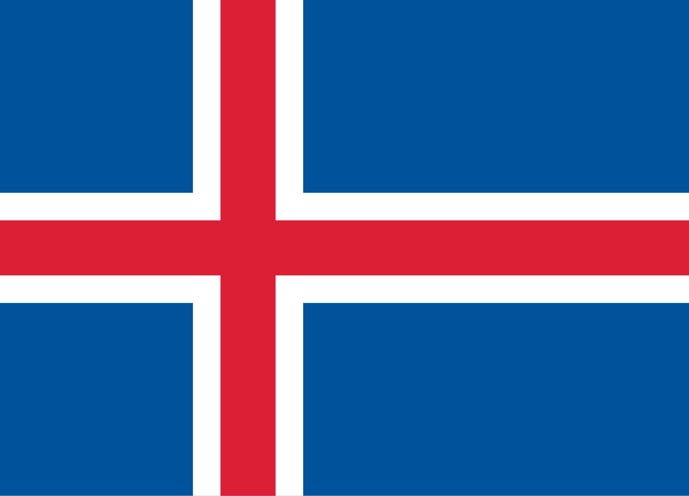

沉浸式感受一下（做梦区 💤）
首先欢迎小林的美梦登场
还有我的极光、公路......


冰岛图片画廊
点击图片可以查看大图，使用左右箭头切换图片
小贴士：画廊中的图片来自我们的冰岛之旅，记录了雷克雅未克、黄金圈、南部地区等地的美丽瞬间。
冰岛共和国
冰岛是位于北大西洋和北冰洋之间的北欧岛国，靠近北极圈，是欧洲第二大岛，首都是雷克雅未克。

公元9世纪中期，爱尔兰人和挪威人移民到冰岛，成为最早居民。1944年6月17日，冰岛共和国成立。
地理特点
- 官方语言：冰岛语
- 时区：比北京晚8小时
- 货币：冰岛克朗 (ISK)
- 气候：受墨西哥湾暖流影响，气候温和
雷克雅未克
雷克雅未克是冰岛的首都……
黄金圈线
黄金圈包括辛格维利尔国家公园、盖歇尔间歇泉和黄金瀑布……
南部地区
南部地区有黑沙滩、冰川湖等壮观景观……
东部地区
东部峡湾风景如画，人烟稀少……
西部半岛
西部半岛有壮观的火山地貌……
极光专栏
冰岛是观赏北极光的绝佳地点……
美食专栏
冰岛特色美食包括发酵鲨鱼、羊肉汤等……
自驾与旅行攻略
冰岛环岛公路自驾建议、租车贴士……